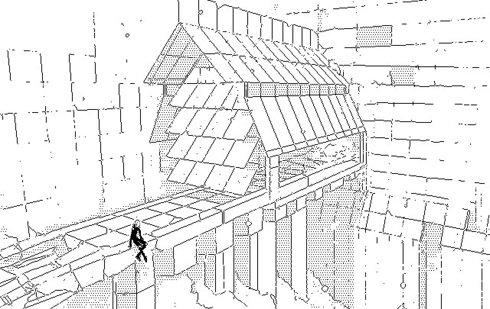

neon hermetism
dinaisth/
characters
kanikule
vetetrandes
laeisth
duomo
dilitriel
whiinders/
aitasla
19V01 — Signalter
Whiiners is part of the greater Dilitriel region.

19U10 — Offline Station
Last update on
19V01
, edited 2 times. +12/10fh